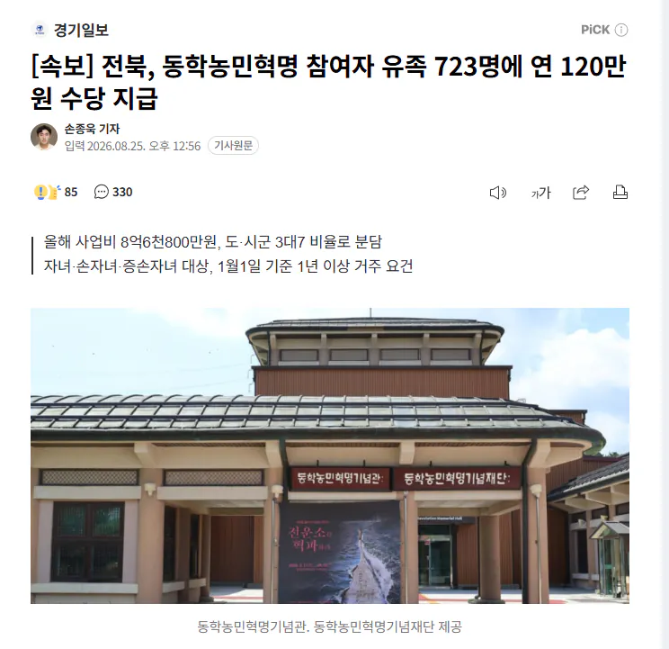

182 · 4 · 17 시간 전 · 원문

[속보] 전북, 동학농민혁명 참여자 유족 723명에 연 120만원 수당 지급
와우 이게 된다고?
수집 당시 댓글 4개
와이얼드 · 7 시간 전
저러다 나당전쟁 참가자 지원금도 나오겠다...
공백지 · 7 시간 전
동학의 갈래에서 나온게 백백교임
bittersalt · 5 시간 전
아니 저런 개지랄하는데 쓸 돈이 있으면 독립유공자 주는데 더 써야되는거 아님?
오늘도어제같이 · 4 시간 전
년 120만원이라고 ㅋㅋ 받는 새끼도 화나겠는데? 돈도 없는 지방 정부가 지돈 아니라고 막 쓰네
댓글
수집 당시 댓글 4개
와이얼드 · 7 시간 전
저러다 나당전쟁 참가자 지원금도 나오겠다...
공백지 · 7 시간 전
동학의 갈래에서 나온게 백백교임
bittersalt · 5 시간 전
아니 저런 개지랄하는데 쓸 돈이 있으면 독립유공자 주는데 더 써야되는거 아님?
오늘도어제같이 · 4 시간 전
년 120만원이라고 ㅋㅋ 받는 새끼도 화나겠는데? 돈도 없는 지방 정부가 지돈 아니라고 막 쓰네